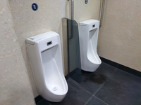

下課10分鐘!裝水喝水上廁所
時間總是不夠，達人曝最強心法!!
記者：汪希之
下課時間是每天都會有位於兩節課堂中間的屬於全體教職員及學生的寶貴時間
每個人下課的時間過法都不同，有的三急都有，於是先去廁所然後合作社再回教室
一條龍解決所需還保證了體內物質循環實屬巧妙。
也有人只是想向好朋友或認識的同學聊天或討論功課，論幹話的誘惑總是那麼強，
也有人選擇跟周公下棋，雖然下著下著就嚇醒的人也不在少數，但至少代表有進入
深層睡眠，每個人下課的過法都不同，所以其實沒什麼訣竅。
----------------------給擬議點小小的版權震撼------------------------